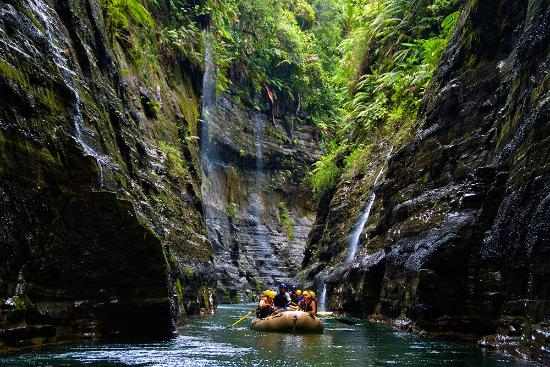

Pacuare River, Costa Rica
The Experience: Immerse yourself in the "National Geographic" of
rivers. The
trip takes you through the heart of the Talamanca Mountains, where primary
rainforest clings to the canyon walls.
☀️The Highlight: Navigate world-class Class III and IV rapids before
drifting
into calm stretches where you'll spot toucans, sloths, and blue morpho
butterflies. The journey includes a stop at a hidden waterfall for a jungle
swim.
🤠Vibe: Lush, tropical, and high-energy.

Colorado River, Grand Canyon
The Experience: Journey through two billion years of Earth's history
on an expedition through the world's most famous canyon. This is a
bucket-list adventure that combines massive whitewater with profound
geological wonder.
☀️The Highlight: Spend your days tackling legendary rapids like
Crystal
and Lava Falls, and your nights camping on pristine sandy beaches under a
canopy
of desert stars. Discover ancient Puebloan granaries and hidden emerald
side-canyons.
🤠Vibe: Epic, historic, and awe-inspiring.

Navua River, Fiji
The Experience: Discover the "Upper Navua Gorge," a deep, narrow
volcanic
canyon found on Fiji's main island of Viti Levu. This trip offers a rare
glimpse into the untouched interior of Fiji, far away from the crowded beach
resorts.
☀️ The Highlight: Paddle past hundreds of cascading waterfalls that
fall
directly into the river from the 75-meter-high canyon walls. Along the way,
you'll visit traditional Fijian villages and learn about the local legends
of the river's protectors.
🤠 Vibe: Serene, cultural, and breathtakingly scenic.
Still have questions?
Custom itineraries are our specialty. Let's talk about your next river expedition.
Message an ExpertAvailable Expedition Overview
| Destination | Duration | Difficulty | Best Season | Price |
|---|---|---|---|---|
| Pacuare River, Costa Rica | 2 Days | Moderate/Hard | May - Oct | $450 |
| Colorado River, Grand Canyon | 7-10 Days | Challenging | April - Sept | $2,800 |
| Navua River, Fiji | 1 Day | Easy/Moderate | Year-round | $180 |